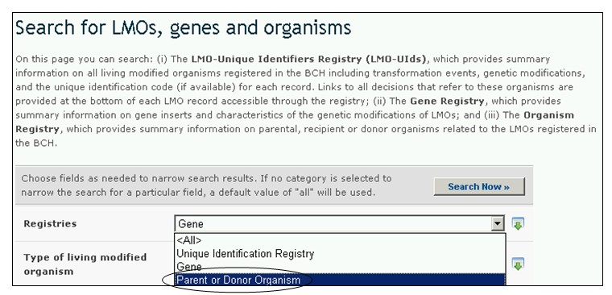

El Registro de Organismos Parentales o Donantes, brinda información resumida de organismos parentales, receptores o donantes relacionados con OVM registrados en el Portal Central del CIISB. Estos registros proporcionan la siguiente información:
- Nombre taxonómico o estado;
- Nombre(s) común(es);
- Características relacionadas con bioseguridad;
- Centro(s) de origen del organismo;
- Centro(s) de diversidad genética del organismo, si se conoce;
- Hábitat donde el organismo existe o prolifera;
- Cualquier otra información relevante

Figura 45